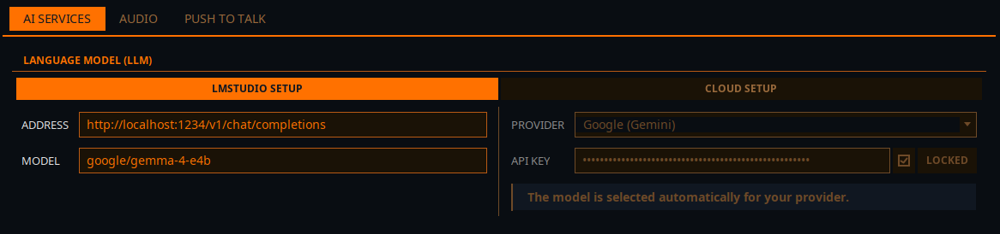

Выбор LLM
Elite Intel нужна языковая модель (LLM), чтобы понимать ваши команды и отвечать на вопросы. Подключить её можно двумя способами, и оба настраиваются в разделе Настройки → Сервисы ИИ → Языковая модель (LLM):
| Вариант | Что нужно | Стоимость |
|---|---|---|
| Локально: LM Studio | Мощная видеокарта, LM Studio и модель google/gemma-4-e4b |
Бесплатно. Всё остаётся на вашем ПК |
| Облако | Аккаунт и API-ключ у поддерживаемого провайдера | Бесплатно с Mistral. Остальные провайдеры берут плату за использование |

Вариант 1: локально (LM Studio)
Левая часть панели, LMStudio:
| Поле | Значение |
|---|---|
| Адрес | http://localhost:1234/v1/chat/completions. Если LM Studio работает на другом ПК в вашей сети, укажите IP-адрес этого ПК вместо localhost |
| Модель | google/gemma-4-e4b |
LM Studio — единственный локальный сервер инференции, который поддерживает Elite Intel, а
google/gemma-4-e4b — единственная поддерживаемая локальная модель.
Требования к GPU
Железо, нужное для запуска игры и LLM на одной машине:
- RTX 3090 24 ГБ VRAM
- AMD RX 7800 XT
Объём VRAM важнее скорости видеокарты. Карты с 12 ГБ VRAM недостаточно, какой бы новой она ни была. Если у вас есть второй ПК с мощной видеокартой, запустите LM Studio на нём и направьте на него Elite Intel. Тогда игровой ПК вообще не занимается инференцией.
Справочная таблица по видеокартам от Kevin Rank: Справочник по GPU
Руководства по установке
| Руководство | |
|---|---|
| LM Studio — Linux | Установка на рабочий стол и запуск в режиме сервера |
| LM Studio — Windows | Настольное приложение с графическим интерфейсом |
| LLM на видеокартах AMD RX | Настройка для AMD |
| LM Studio на Ubuntu Server | Установка без GUI на отдельную машину для инференции |
Почему именно google/gemma-4-e4b?
Elite Intel — это парсер команд и инструмент анализа данных, а не чат-бот для бесед. Умения естественно поддерживать разговор недостаточно. Модель должна по вашим словам определить нужное действие, проанализировать игровые данные и вернуть структурированный результат, а не сочинение или HTML. Не все модели такого размера делают это надёжно.
Жёсткое требование — вызов функций (function calling). Компаньон Elite Intel не просит модель
описать, что она сделала бы. Он даёт ей набор инструментов и ожидает, что она вызовет один из них
с аргументами. Модель, которая не умеет формировать корректный вызов инструмента, вообще не сможет
управлять приложением, как бы хорошо она ни писала. google/gemma-4-e4b поддерживает вызов
функций.
При объёме около 6,3 ГБ она с запасом помещается в VRAM рядом с игрой на карте с 24 ГБ. Ничего не выгружается на CPU, поэтому ответы остаются быстрыми.
О снятой с поддержки модели V1.0. Ранние версии рекомендовали
tulu-3.1-8b-supernova. Она не поддерживает вызов функций, поэтому не может работать с компаньоном и больше не подходит для Elite Intel. Если вы следуете старому руководству, не используйте его и установитеgoogle/gemma-4-e4b.
Вариант 2: облако
Правая часть панели, Облачная настройка:
- Выберите провайдера в списке Провайдер.
- Вставьте ключ этого провайдера в поле API-ключ.
- Установите флажок Заблокировано, чтобы сохранённый ключ нельзя было случайно изменить.
- Нажмите Сохранить, затем запустите или перезапустите сервисы на вкладке «Вега».
Провайдера вы выбираете сами. Elite Intel не пытается определить его по ключу: провайдеры слишком часто меняют формат ключей, чтобы на это можно было полагаться. Модель вы не выбираете: Elite Intel берёт подходящую для вашего провайдера.
| Провайдер | Примечания |
|---|---|
| Mistral | Бесплатный тариф, банковская карта не нужна. Самый простой способ начать |
| Anthropic (Claude) | Платно |
| OpenAI | Платно |
| Google (Gemini) | Платно |
| xAI (Grok) | Платно |
| DeepSeek | Платно |
Как получить ключ у каждого провайдера: Настройка облачного LLM.
Что выбрать?
Запускайте LM Studio локально, если:
- у вас RTX 3090 24 ГБ или аналог, либо второй ПК в сети с такой картой
- вы хотите, чтобы всё оставалось на вашем собственном железе
Используйте облачного провайдера, если:
- вашей видеокарте не хватает VRAM, чтобы запускать модель рядом с игрой
- вы не хотите возиться с сервером инференции
Сомневаетесь? Начните с бесплатного тарифа Mistral. Это займёт несколько минут, а перейти на локальную модель можно в любой момент без переустановки.
Community 👉Matrix👈